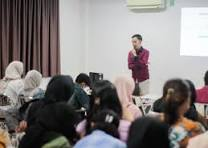

LPK Institut Pekerja Indonesia mempersiapkan tenaga kerja Indonesia yang kompeten, profesional, berkarakter, dan siap bekerja di dalam maupun luar negeri.
LPK Institut Pekerja Indonesia hadir sebagai lembaga pelatihan yang berkomitmen mempersiapkan tenaga kerja Indonesia agar memiliki kompetensi, karakter, dan kesiapan untuk memasuki dunia kerja.
Program pelatihan dirancang untuk membekali peserta dengan pengetahuan, keterampilan, bahasa, budaya, dan kesiapan kerja.
Peserta dipersiapkan untuk mengikuti ujian dan sertifikasi sesuai dengan kebutuhan program dan dunia kerja.
Mendampingi peserta dalam proses menuju peluang kerja di dalam maupun luar negeri sesuai program yang tersedia.
Kami mempersiapkan peserta melalui pelatihan, pembekalan, dan pendampingan agar lebih siap menghadapi dunia kerja.
Program pelatihan disusun untuk membekali peserta dengan pengetahuan dan keterampilan yang dibutuhkan dalam dunia kerja.
Peserta mendapatkan pembekalan bahasa dan pemahaman budaya kerja sesuai dengan program yang diikuti.
Peserta dipersiapkan untuk mengikuti ujian dan sertifikasi sesuai dengan kebutuhan program.
Peserta mendapatkan pendampingan selama proses persiapan menuju tahapan kerja sesuai program yang tersedia.
Peserta mengikuti tahapan yang terstruktur mulai dari proses pendaftaran, pelatihan, sertifikasi, hingga persiapan keberangkatan sesuai program yang dipilih.
Peserta melakukan pendaftaran dan mengisi data yang diperlukan.
Peserta mengikuti proses seleksi dan pemeriksaan kesehatan sesuai ketentuan.
Peserta menyelesaikan proses administrasi awal sebelum mengikuti pelatihan.
Peserta mengikuti program pelatihan selama 4 bulan sesuai jalur yang dipilih.
Peserta mengikuti ujian dan proses sertifikasi sesuai program.
Peserta mengikuti proses interview dan pencocokan dengan peluang kerja yang tersedia.
Proses pengurusan Certificate of Eligibility sesuai jalur program.
Peserta menyelesaikan persiapan administrasi dan kebutuhan sebelum keberangkatan.
Peserta diberangkatkan sesuai dengan jadwal dan proses yang telah ditentukan.
Peserta memulai perjalanan kerja sesuai program dan penempatan yang diperoleh.
Pastikan kamu memenuhi persyaratan dan menyiapkan dokumen yang diperlukan sebelum mengikuti program LPK Institut Pekerja Indonesia.
Belum yakin apakah kamu memenuhi persyaratan?
Konsultasi & DaftarKami menyediakan pembekalan dan fasilitas yang mendukung peserta selama mengikuti proses pelatihan dan persiapan kerja.
Lingkungan belajar yang mendukung proses pelatihan dan pembelajaran peserta.
Pembelajaran bahasa sesuai dengan kebutuhan program dan tujuan peserta.
Pembekalan mengenai budaya dan lingkungan kerja sesuai negara tujuan.
Persiapan menghadapi ujian dan sertifikasi sesuai jalur program.
Pembekalan untuk membantu peserta lebih siap menghadapi proses interview kerja.
Pendampingan peserta dalam berbagai tahapan proses sesuai program yang diikuti.
LPK Institut Pekerja Indonesia menyediakan skema pembiayaan yang membantu peserta mengikuti proses pendidikan dan persiapan keberangkatan sesuai ketentuan program.
Skema dana talangan pendidikan untuk membantu pembiayaan peserta selama mengikuti masa pelatihan.
Pengajuan dana talangan untuk kebutuhan pemberangkatan sekaligus penyelesaian dana pendidikan sebelumnya.
Pendaftaran
Pelatihan
Pengajuan Dana
Pemberangkatan
Pengembalian Dana
Detail persyaratan, mekanisme pengajuan, dan ketentuan pengembalian mengikuti ketentuan program dan lembaga pembiayaan terkait.
Dokumentasi kegiatan pelatihan dan pembinaan peserta LPK Institut Pekerja Indonesia.

Pelatihan peserta LPK IPI
Kegiatan pembelajaran
Proses pembekalan
Dokumentasi kegiatan
Aktivitas peserta LPK IPI
Dokumentasi pelatihan
Temukan jawaban atas beberapa pertanyaan umum mengenai program dan proses di LPK Institut Pekerja Indonesia.
LPK Institut Pekerja Indonesia memiliki program pelatihan untuk calon pekerja sesuai dengan program yang tersedia, termasuk jalur Jepang, Korea, dan pelatihan automotive.
Pendaftaran dapat dilakukan melalui formulir pendaftaran online LPK IPI. Setelah mendaftar, peserta akan mengikuti tahapan seleksi sesuai program yang dipilih.
Masa pelatihan yang tercantum dalam program LPK IPI adalah selama 4 bulan. Detail jadwal dan tahapan pelatihan mengikuti program yang dipilih peserta.
SSW (Specified Skilled Worker) merupakan salah satu jalur program kerja yang tersedia dalam proses penempatan sesuai dengan ketentuan program.
Tersedia skema pembiayaan sesuai dengan program yang ditawarkan. Detail nominal, persyaratan, dan mekanisme pengajuan dapat dilihat pada bagian Skema Pembiayaan atau dikonsultasikan dengan Customer Service.
Peserta mengikuti tahapan program mulai dari pendaftaran, seleksi, pelatihan, ujian dan sertifikasi, matching job, proses COE, persiapan keberangkatan, hingga pemberangkatan sesuai program.
Program pelatihan LPK Institut Pekerja Indonesia dirancang untuk mempersiapkan peserta menuju dunia kerja di dalam maupun luar negeri.
Program persiapan kerja ke Jepang melalui pelatihan bahasa, budaya, keterampilan, sertifikasi, dan pendampingan menuju penempatan kerja.
Program persiapan kerja ke Korea melalui pelatihan bahasa, budaya, keterampilan, dan persiapan menuju peluang kerja.
Siapkan diri untuk mendapatkan pelatihan, sertifikasi, dan kesempatan kerja sesuai dengan program pilihanmu.
Persiapkan diri untuk bekerja di Jepang melalui pelatihan bahasa, budaya, keterampilan, sertifikasi, dan pendampingan menuju penempatan kerja.
Daftar Program JepangPersiapkan diri untuk bekerja di Korea melalui pelatihan bahasa, budaya, keterampilan, dan persiapan menuju peluang kerja.
Daftar Program KoreaPunya pertanyaan tentang program, pendaftaran, atau proses pelatihan? Tim LPK Institut Pekerja Indonesia siap membantu.
Tangerang Selatan, Banten
Jangan ragu untuk menghubungi kami dan dapatkan informasi lengkap mengenai program yang tersedia.
Hubungi Customer Service